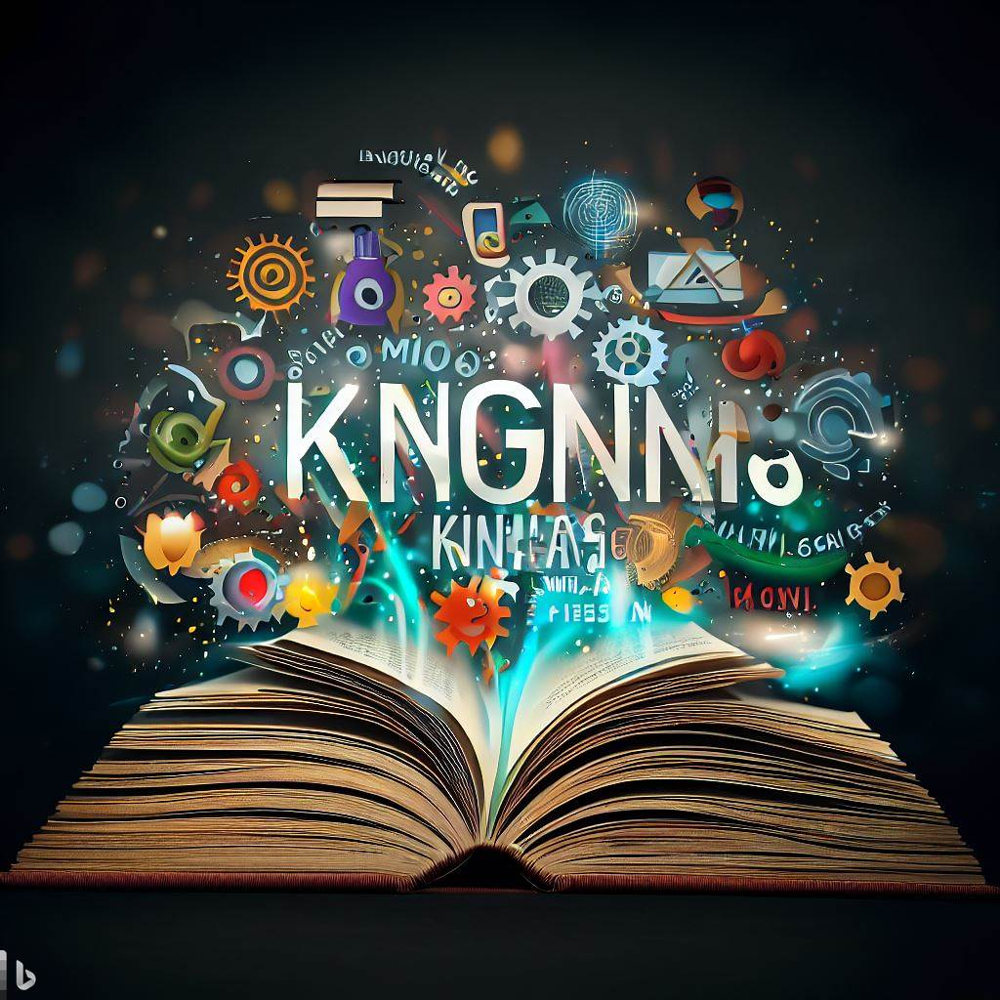
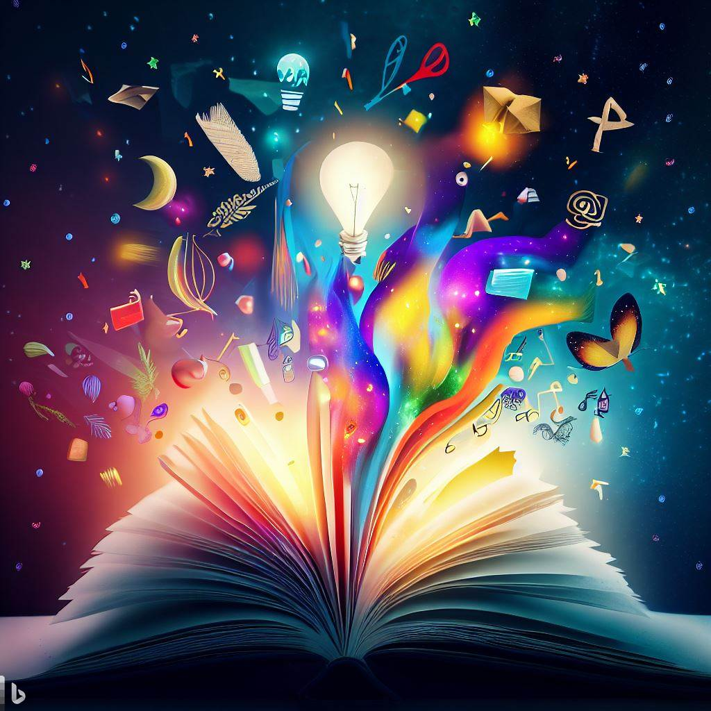
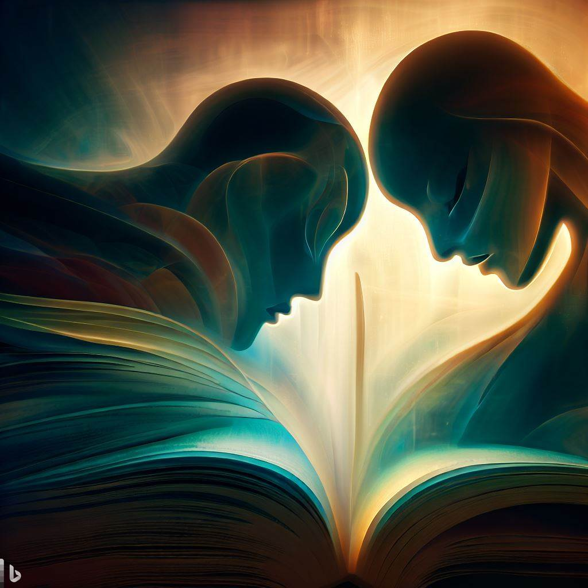

Conhecimento e Aprendizado

A leitura é uma fonte inesgotável de conhecimento e aprendizado. Por meio dos livros, revistas, artigos e outros materiais de leitura, somos expostos a diferentes ideias, perspectivas e informações. Através da leitura, expandimos nossos horizontes e adquirimos conhecimentos sobre uma ampla variedade de assuntos, desde história e ciências até filosofia e artes. Esse conhecimento nos capacita a tomar decisões mais informadas, a compreender melhor o mundo ao nosso redor e a crescer intelectualmente.
Desenvolvimento da Imaginação e Criatividade

A leitura estimula nossa imaginação e criatividade de maneiras únicas. Ao mergulhar em uma história, somos transportados para diferentes lugares, épocas e realidades. As descrições vívidas e os personagens complexos encontrados nos livros nos permitem visualizar e sentir experiências que podem ser diferentes das nossas. Através da leitura, somos inspirados a pensar de forma criativa, explorar possibilidades e expandir nossa capacidade de sonhar.
Empatia e Compreensão

A leitura nos permite entrar na mente de personagens e vivenciar suas histórias e emoções. Essa imersão em diferentes perspectivas ajuda a desenvolver nossa empatia e compreensão pelos outros. Ao ler sobre as experiências e desafios enfrentados por personagens de diferentes origens, culturas e realidades, somos incentivados a considerar pontos de vista distintos e a desenvolver uma sensibilidade maior para com as questões sociais e humanas. A leitura pode nos tornar mais compassivos e tolerantes.